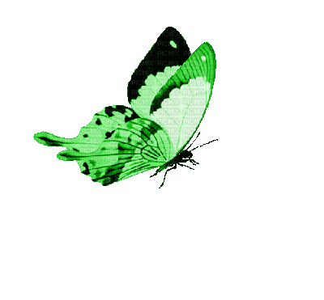
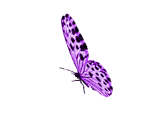
Based on Maurice I. Osotsi et al. (2020)
Natural biological systems continuously evolve to solve environmental and survival challenges. Examples include the thermal insulation of polar bear fur and the dynamic color changes of chameleons. Butterflies have particularly unique wing architectures with complex micro- and nanostructures that interact with light and respond to stimuli like temperature, humidity, and chemicals.
The specific design of butterfly wing scales has inspired innovative developments in fields such as sensors and sustainable energy technologies. Their natural capabilities for selective reflection, light manipulation, and responsiveness are being used to address energy shortages, pollution, and climate change.
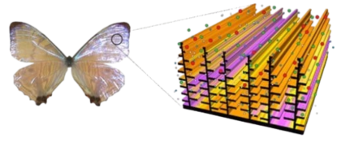
Butterfly wings consist of layered scales made up of intricate hierarchical structures. These can be classified into five categories:
These feature simple ridges without specialized modifications. They typically exhibit absorptive coloration due to the random distribution of pigments like melanin. An example is the black wings of Achalarus lyciades.
These scales have complex ridge structures that influence light reflection and coloration. Examples include:
Scales with perforations that create partially transparent wings, common in glasswing butterflies like Greta oto. These structures minimize light reflection, producing transparency through nanoscale modifications.
In these, the lamellae are disordered and fill the scale lumen, enabling a high surface area with strong scattering properties. Found in Colias eurytheme.
Three-dimensional gyroid structures found inside the scales that manipulate light at the nanoscale, creating brilliant iridescence. Species like Thecla opisena and some Morpho butterflies possess these sophisticated architectures.
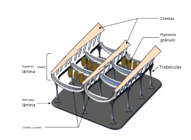
Butterfly wing structures have inspired several types of advanced sensors:
Thermal sensors bioinspired by butterfly wings leverage the micro/nanostructures of wing scales (which facilitate interaction with light) to transform temperature changes into visual signals. In some experimental approaches, the wing is used directly, saturated with ethanol, and sealed. The principle is based on thermal expansion/contraction and refractive index modification. An example is the thermochromic sensor using Papilio ulysses wings and ethanol, where increasing temperature volatilizes the ethanol, reversibly and visibly altering the wing color. This type of sensor aligns with the applications discussed in the paper, in the sensors section.
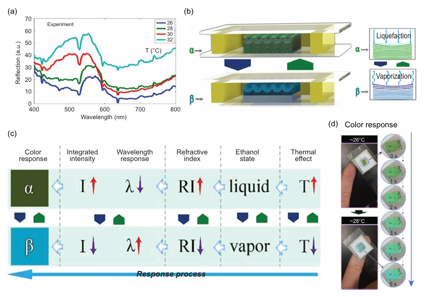
Butterfly-wing-inspired medical biosensors, such as the Morpho menelaus-based wearable device, integrate microfluidic systems and electronic networks directly onto the wing structure. This design allows for simultaneous monitoring of biochemical markers (such as AD7c-NTP proteins and IgG) and physiological signals associated with neurodegenerative diseases, such as Alzheimer's and Parkinson's. The device uses the wing structure as a support to detect the fluorescence intensity of the aforementioned indicator proteins and measure wrist bending resistance, providing data on tremors or stiffness. The collected data can be comprehensively analyzed using a smartphone, facilitating disease monitoring and management.
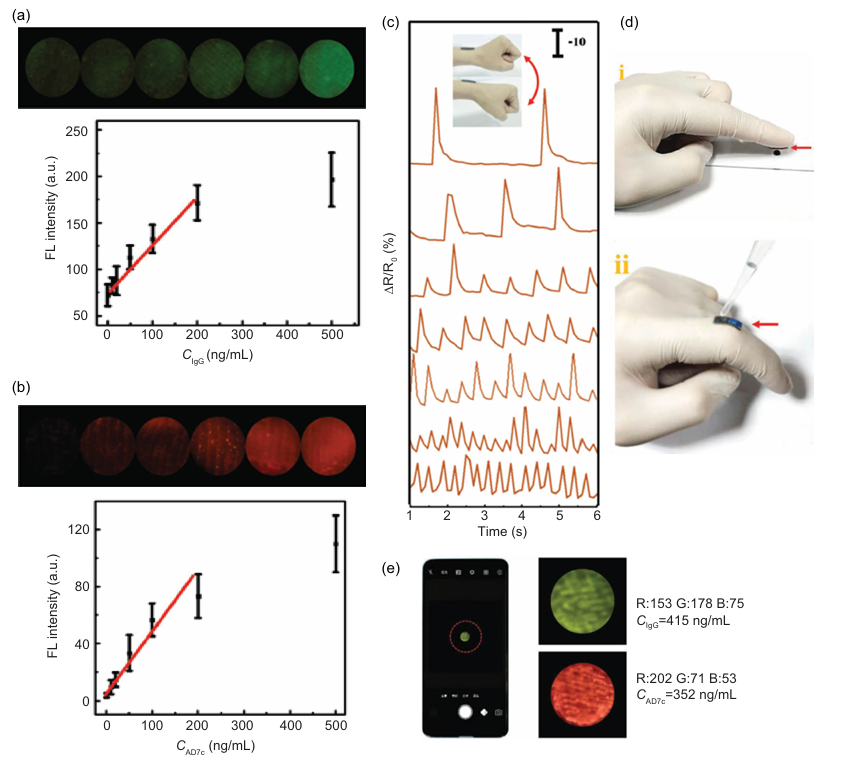
In the C/TiO2 vapor sensor with Papilio paris wings, the honeycomb-like porous architecture of the wing facilitates vapor diffusion, and the small grain size of the TiO2 improves sensitivity. This results in a high specific surface area and excellent response to benzene and dimethylbenzene vapor, enabling the visual detection and quantification of these compounds. Additionally, Morpho didius wings have been used in the detection of chemical warfare agents (CWAs), specifically dimethyl methylphosphonate (a nerve agent simulant) and dichloropentane (a mustard gas simulant) vapors. The periodic architecture of Morpho didius wings reflects visible light, allowing the reflectance of each analyte to be measured in parts per million to improve CWA detection. The sensitivity of the wing architecture and its responsiveness to refractive index are important properties in these sensor applications.
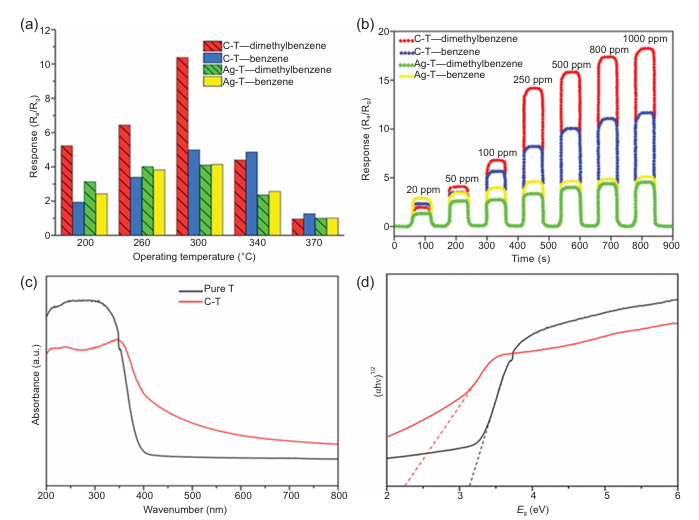
Anti-counterfeiting security devices are inspired by the intricate wing structure of Morpho butterflies. These wings have microstructures that interact with light to create iridescent colors. Scientists mimic this structure by creating a film with two different layers, similar to Morpho wings. When this film is rotated, the way light is reflected and scattered creates patterns that are either revealed or hidden, like a QR code. Thus, the natural complexity of Morpho wings provides a model for creating a form of visual verification that is difficult to copy, making products easier to authenticate.
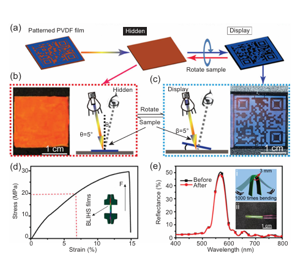
The hierarchical structures of butterfly wings are inspiring innovations in energy technologies:
Inspired by butterfly wings, photocatalysis uses wing nanostructures as a model to create materials that clean pollution with light. By copying these structures, photocatalysts with a large surface area and many active sites are fabricated, accelerating the decomposition of pollutants. One example is the CdS/Au photocatalyst, inspired by the wings of Morpho didius, where the copied 3D structure of the wings facilitates better light absorption and more efficient charge transfer, resulting in higher hydrogen production and good stability during repeated use.
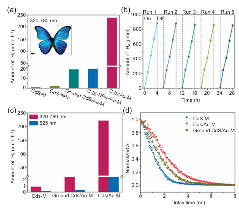
Inspired by butterfly wings, energy harvesting has advanced thanks to biophotosynthetic architectures that have allowed for the creation of more efficient photovoltaic materials. Mimicking the wings of the black butterfly Pachliopta aristolochiae, photovoltaic active layers with nanoholes have been developed that increase sunlight absorption by up to 90%, holding promise for thin solar cells. Furthermore, a butterfly-inspired triboelectric nanogenerator (B-TENG) has been created, using a four-bar system with springs, to capture the multidirectional energy of water waves, replicating the way a butterfly's wings interact with the air.
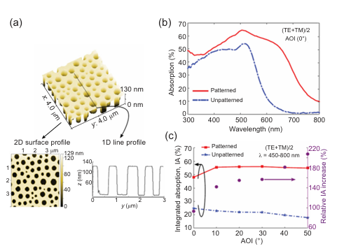
Energy Storage Applications: Inspired by butterfly wings, advances have been made in energy storage systems, particularly in the design of high-performance electrodes. The wings of the Parides sesostris species are notable for their three-dimensional hierarchical microarchitectures, which offer a large surface area ideal for electrode fabrication. The process involves carbonizing these wings, resulting in nitrogen-doped carbon (N). This material possesses numerous active sites that significantly improve the energy storage capacity of the resulting electrodes. The hierarchical structure of the wings provides a large surface area to accommodate more ions, while the addition of nitrogen to the carbon structure creates additional active sites that facilitate ion binding and exchange, thereby improving overall energy storage performance.
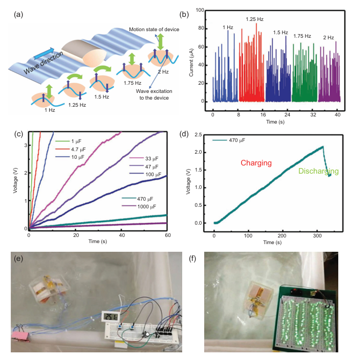
Butterfly wing architectures demonstrate how nature’s micro- and nanostructures can inspire cutting-edge technological solutions. Advances in sensors, energy harvesting, and energy storage devices based on these structures are contributing to sustainable technological development, addressing environmental and societal needs efficiently.
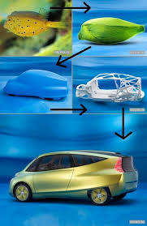
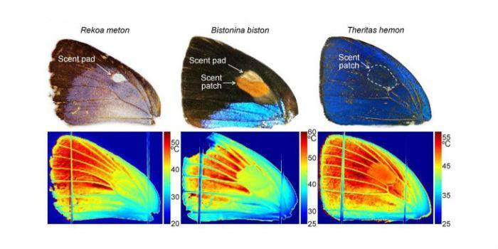
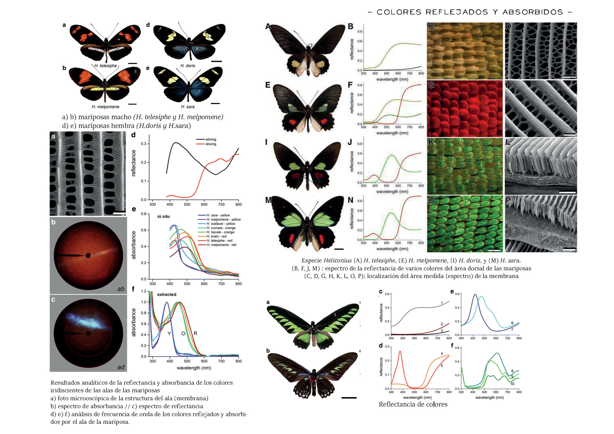
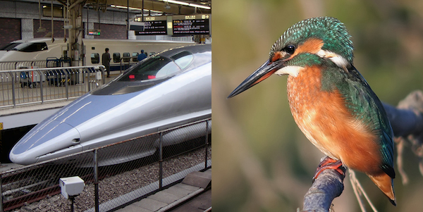